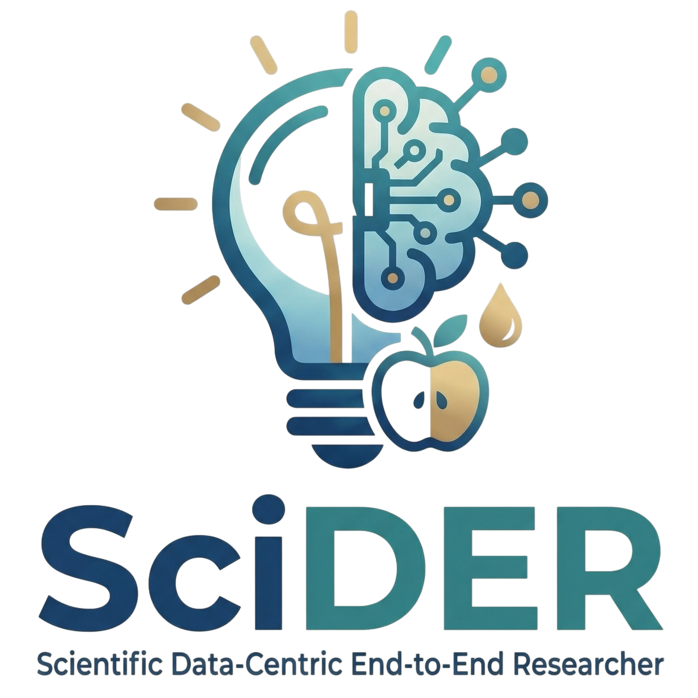

SciDER: Scientific Data-centric End-to-end Researcher
An end-to-end agentic system that parses raw experimental data, designs hypotheses, and drives self-evolving scientific workflows across domains.
Authors
Contact
Abstract
Automated scientific discovery with large language models is transforming the research lifecycle from ideation to experimentation, yet existing agents struggle to autonomously process raw data collected from scientific experiments. We introduce SciDER, a data-centric end-to-end system that automates the research lifecycle. Unlike traditional frameworks, our specialized agents collaboratively parse and analyze raw scientific data, generate hypotheses and experimental designs grounded in specific data characteristics, and write and execute corresponding code. Evaluation on three benchmarks shows SciDER excels in specialized data-driven scientific discovery and outperforms general-purpose agents and state-of-the-art models through its self-evolving memory and critic-led feedback loop. Distributed as a modular Python package, we also provide easy-to-use PyPI packages with a lightweight web interface to accelerate autonomous, data-driven research and aim to be accessible to all researchers and developers.
System Highlights
Release Snapshot
Agent Comparison

Demo Walkthrough
- Upload raw experimental data or connect lab storage.
- SciDER parses observations, protocols, and metadata.
- Hypothesis generator proposes next-step experiments.
- Critic validates feasibility and novelty.
- Memory engine distills outcomes for future cycles.
Demo Links
Resources
Paper
The submission highlights the data-centric workflow, evaluation across domains, and a lightweight tooling stack for research labs.
Open Questions
We are actively exploring broader domain coverage, interactive experiment planning, and long-horizon memory evaluation. Collaborators are welcome.